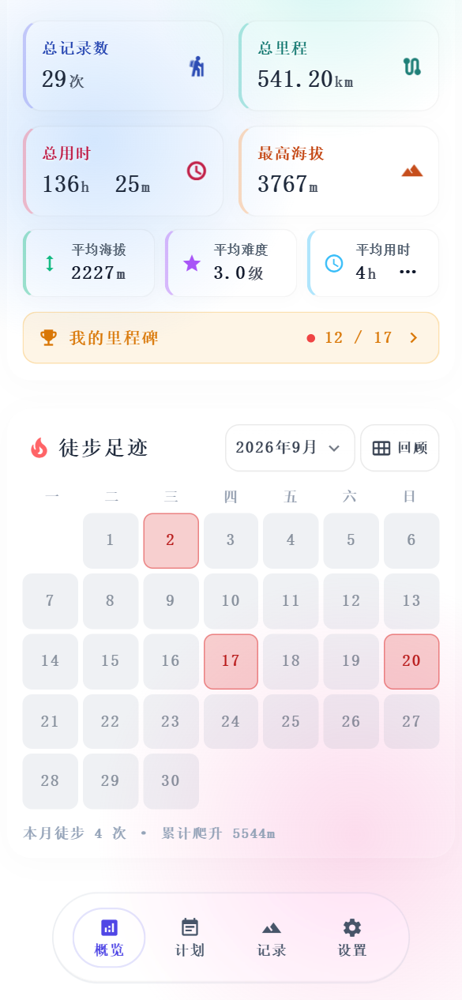
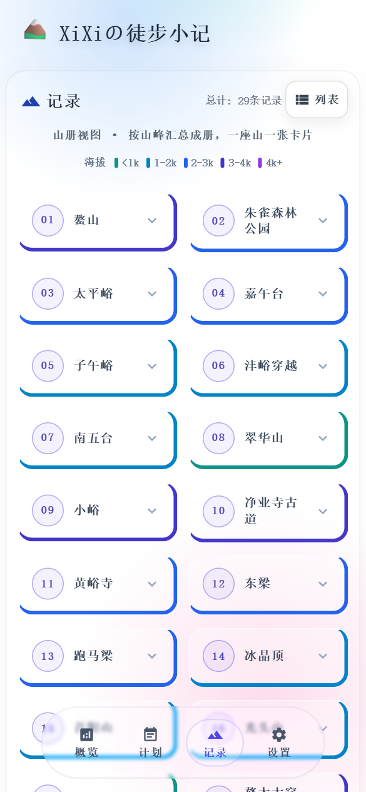

免费
Free to download
一座只属于你自己的登山记录本
登完一座记一座。路线怎么走的、水在哪补的、什么时候该撤——写下来，下座山才有底气。 难度、小日记、心情、天气、同行人、最多 24 张照片，一并留在这本子里。
下面是真机截图，不是设计稿。 装上就是这三屏：统计概览 / 徒步足迹 / 山册。



统计主卡、年资、年度足迹热力图、年度回顾。 所有数字只做加减法：不做评分，不做排行，也不告诉你「还不够努力」。
统计主卡把次数、里程、用时、最高海拔放在一起；年资从第一条记录开始数； 热力图按天点亮，哪个月走得多一眼就知道。年度回顾把今年和去年并排放， 多了少了都只是事实，不带评判。
增删改都在一处；难度 1–5、小日记、心情、天气、照片最多 24 张一条。 按年份分组，列表与山册双视图，点开一行就能读、就能改。
不需要写得好看。累了就写一句小日记，收工再补细节。 没有模板，没有必填项：想只留一个日期和一座山名，也完全没问题。
本地压缩后存进浏览器 IndexedDB，不上传、不识别、不做人脸归类。 详情页横向照片墙，点开就是全屏灯箱，可缩放、可保存。
列表与日历双视图；过期、今天、明天三种徽章一眼分清。 到期计划选「完成」，自动转成一条记录；每天 08:00 提醒一次。
记录页与计划页各有一个搜索框，按山名匹配， 敲两个字就把那趟翻出来。只搜你自己的数据，索引始终在本机。
一键生成，带海拔、难度、心情、天气、同行人。 没有信息流，没有关注，没有点赞；不分享，也完全不影响。
完整备份 zip、纯数据备份、WebDAV 云同步、导出诊断、检查更新、 深色模式、震动开关、照片占用优化、抹掉足迹。每一项都在明面上。
没有账号体系，也没有一台存着你记录的服务器。 同步只发生在你主动配置的坚果云 WebDAV 里，数据落到你自己的账号下； 自动保留两份历史，想回滚随时回滚。
记录只在本机，那守门的责任就在安装包本身。 从签名校验到文本进 DOM 前一律转义，五道都留着。
更新日志随包内置，断网也能翻。下面是最近两版。
记录与照片只存本机。
网页版，存你的浏览器里。
无账号、无统计、无广告。
唯一可选的联网只有两处：你主动配置的坚果云 WebDAV，数据同步到你自己的账号；
以及「检查更新」查一次版本号。
下载即用，不用注册。
想留的都留下，想走的随时带走。